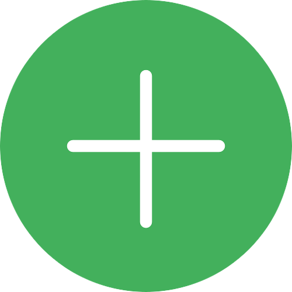

Capture um pensamento
Capturar
Capturar
ToDo
Wish

Tarefas para Processar
Acalmar o gato da Sheila
Pentear o cabelo do Danilo
Parafusar as prateleiras do Erik
Comprar cerveja para mim, IPA de preferência
Demanda sua ação ?
Acalmar o gato da Sheila
Sim
Não
Acalmar o gato da Sheila